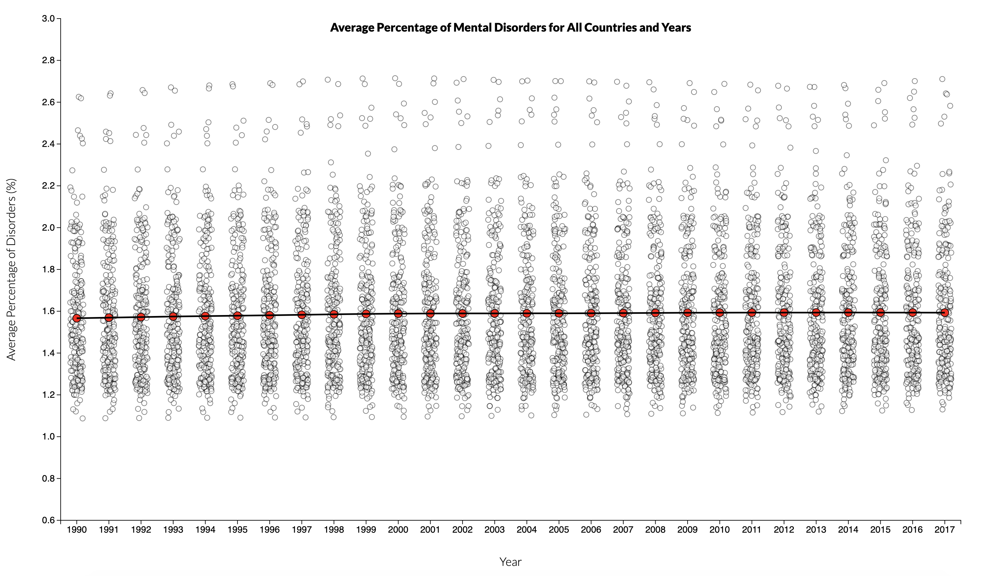
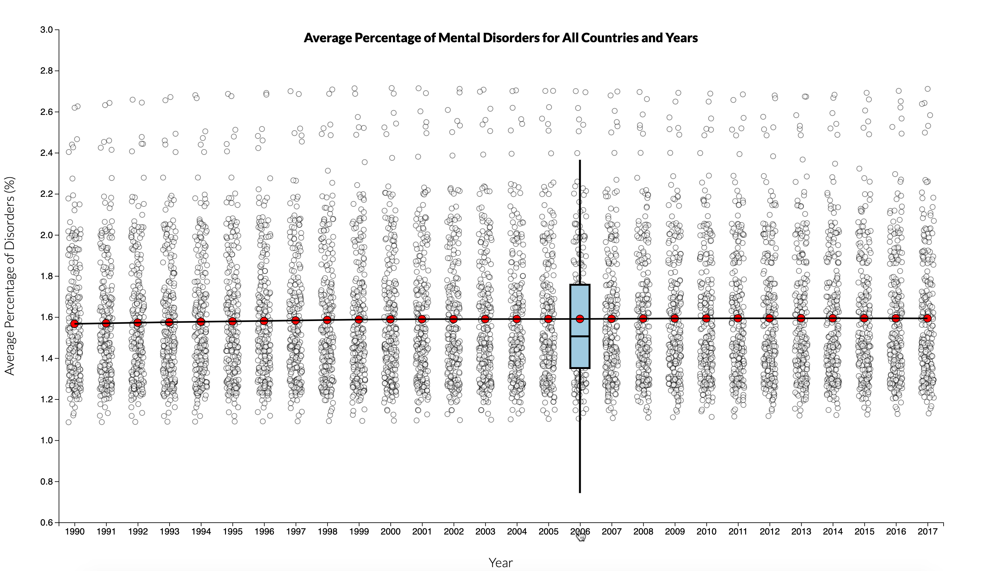
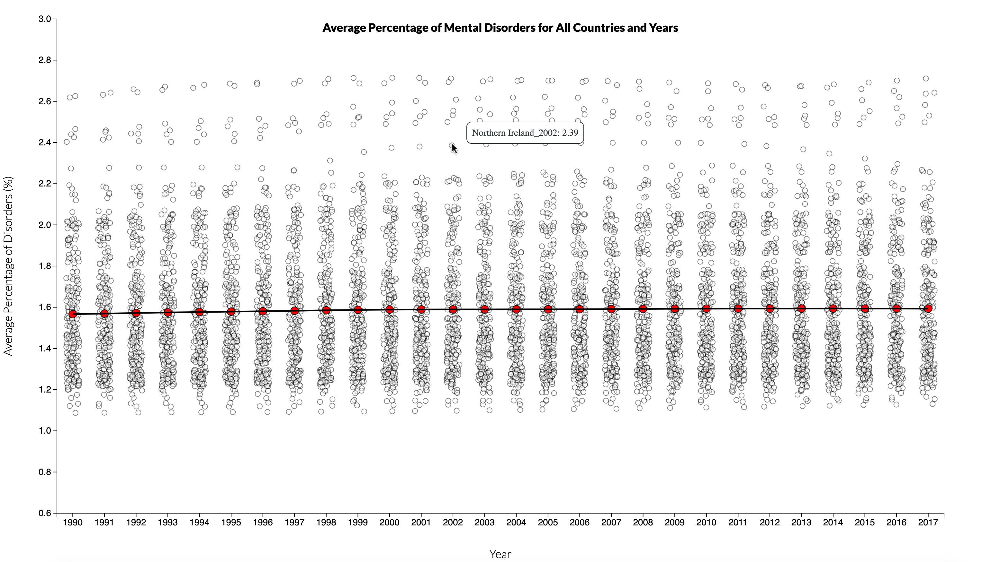
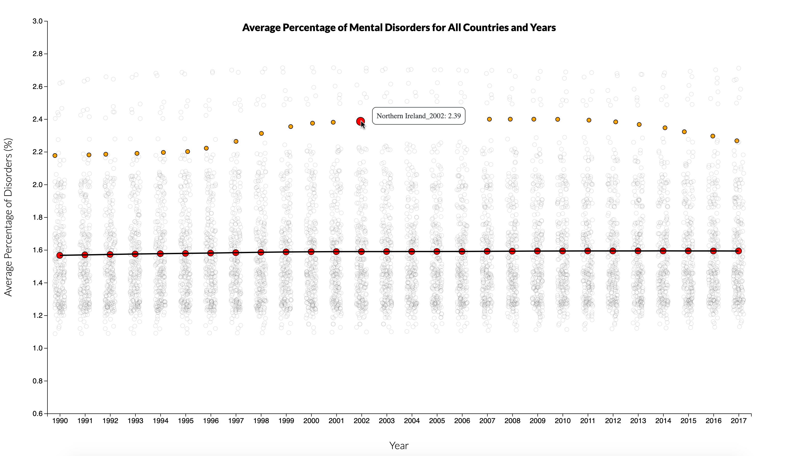
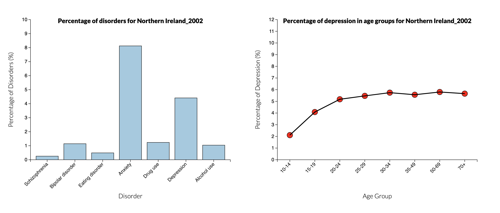
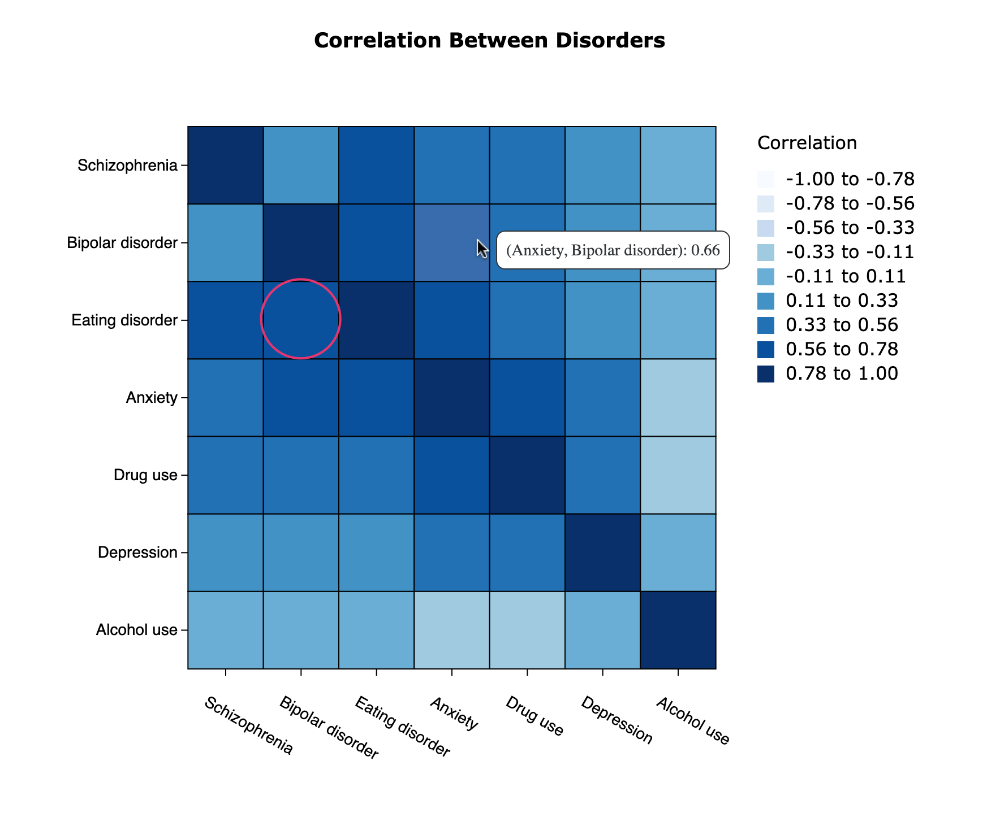

Mental Disorders Across the World
Firo Kaveh
Each year millions of people all over the world battle with some sort of
mental health issues. However, people still have to face the stigma around
mental health problems and often suffer in silence without seeking
treatment for their condition. That is why mental health awareness is a
must to improve understanding different conditions and disorders and
provide better access to healthcare and accommodations for those who need
it. The goal of this project is to throw some light on major mental
disorders across the world.
Instructions:
- At first the following visualization is presented where each dot represents the average of all mental health
disorders percentages for a specific year and country. Also the red dots show the average of all datapoints
for that year and the solid line connects all these average points.

- By clicking on a specific year, the box plot for the corresponding year will appear. By clicking on the year again, the box plot disappears.

- By hovering over a specific datapoint, the information about that datapoint shows up.

- Clicking on a datapoint highlights that datapoint plus all other points corresponding to that country over the years, and clicking on the same point again undoes the highlight.

- Clicking on a datapoint from the first visualization updates the second and the third visualization to show the data for the chosen year and country.

- Hovering over a specific tile, you can see the correlation between 2 disorders. Also the highest correlation is annotated with a red circle.
